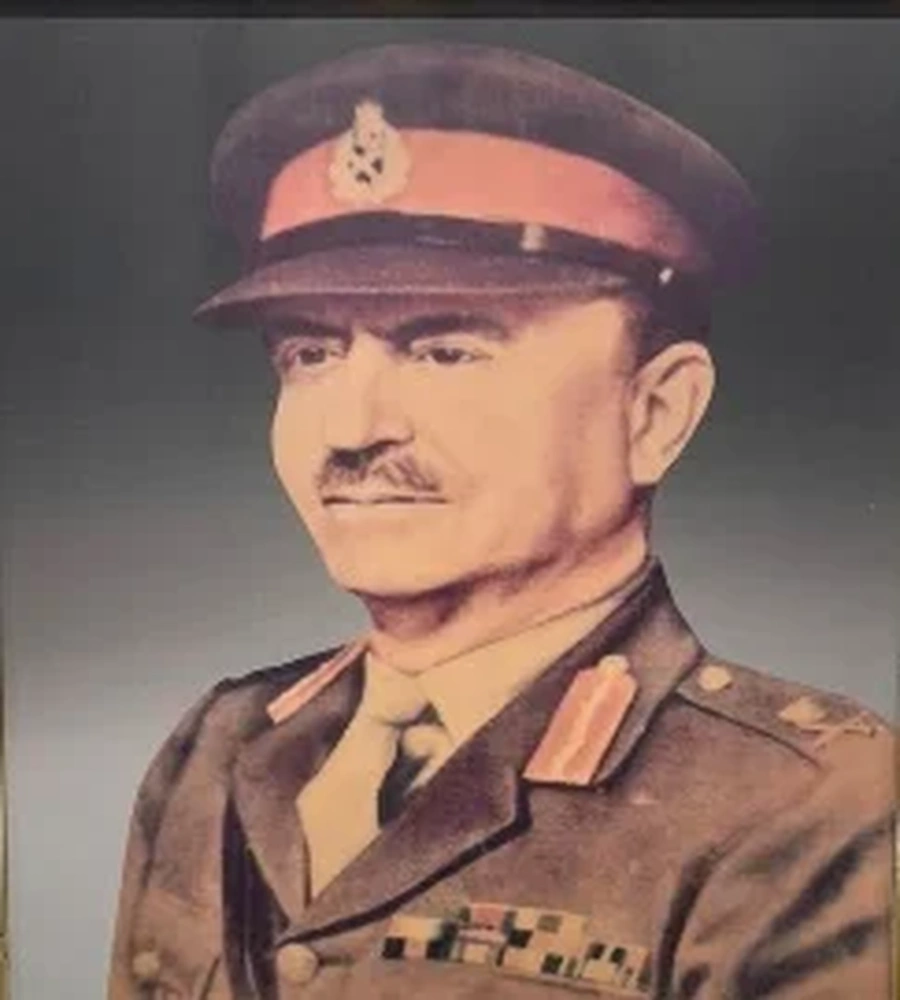

Major General BW Key, CB, DSO, MC, ADC


Title: Major General BW Key, CB, DSO, MC, ADC
Category: COR Gallery
Artist: Historical Figure
Year: April 1947 – December 1949
Category: COR Gallery
Artist: Historical Figure
Year: April 1947 – December 1949
MAJOR GENERAL BW KEY, CB, DSO, MC, ADC (April 1947 – December 1949)
Major General Berthold Wells Key, CB, DSO, MC, ADC (popularly known as 'Billy Key') was born on 19 December 1895 to Dr JM Key. He was educated at Dulwich College in London and commissioned into the Unattached List of the British Army on 01 October 1914. Two months later he transferred to the British Indian Army. After a short stint with XV LUDHIANA SIKHS, he was posted to the XLV RATTRAY'S SIKHS. Key served with the XLV RATTRAY'S SIKHS during the First World War, reaching the rank of Captain by 1918. He was wounded in Mesopotamia in 1918 and received the Military Cross.
After the First World War, Key served in Afghanistan with RATTRAY'S SIKHS. He attended Staff College, Quetta during 1931-32 and took over command of LUDHIANA SIKHS in 1936. In 1937, he received the Distinguished Service Order (DSO) while serving in Waziristan. He was appointed temporary Deputy Military Secretary, India from 21 December 1939 to 17 August 1940. From 18 August 1940 to 13 January 1942, he commanded the 8th Indian Infantry Brigade in Malaya. Key's brigade were the first British troops to face the Japanese when they invaded Malaya in December 1941. He later took over the command of 11th Indian Infantry Division and in February 1942, was taken PoW by the Japanese in Singapore.
In 1947, he was made the GOC of Lahore District, which was supporting the Punjab Boundary Force. He was appointed as Colonel of the SIKH Regiment in April 1947. For this last service, he was awarded the CB and appointment as honorary ADC to the King. He held the Honorary Colonelcy of the SIKH Regiment till 1962. He died on 26 December 1986 at Sandwich, Kent, at the ripe age of 90 years.
Major General Berthold Wells Key, CB, DSO, MC, ADC (popularly known as 'Billy Key') was born on 19 December 1895 to Dr JM Key. He was educated at Dulwich College in London and commissioned into the Unattached List of the British Army on 01 October 1914. Two months later he transferred to the British Indian Army. After a short stint with XV LUDHIANA SIKHS, he was posted to the XLV RATTRAY'S SIKHS. Key served with the XLV RATTRAY'S SIKHS during the First World War, reaching the rank of Captain by 1918. He was wounded in Mesopotamia in 1918 and received the Military Cross.
After the First World War, Key served in Afghanistan with RATTRAY'S SIKHS. He attended Staff College, Quetta during 1931-32 and took over command of LUDHIANA SIKHS in 1936. In 1937, he received the Distinguished Service Order (DSO) while serving in Waziristan. He was appointed temporary Deputy Military Secretary, India from 21 December 1939 to 17 August 1940. From 18 August 1940 to 13 January 1942, he commanded the 8th Indian Infantry Brigade in Malaya. Key's brigade were the first British troops to face the Japanese when they invaded Malaya in December 1941. He later took over the command of 11th Indian Infantry Division and in February 1942, was taken PoW by the Japanese in Singapore.
In 1947, he was made the GOC of Lahore District, which was supporting the Punjab Boundary Force. He was appointed as Colonel of the SIKH Regiment in April 1947. For this last service, he was awarded the CB and appointment as honorary ADC to the King. He held the Honorary Colonelcy of the SIKH Regiment till 1962. He died on 26 December 1986 at Sandwich, Kent, at the ripe age of 90 years.
🇬🇧 English
🇮🇳 हिन्दी
ੴ ਪੰਜਾਬੀ
Open on Mobile
Scan this QR code to view and switch between English, Hindi, or Punjabi on your phone.